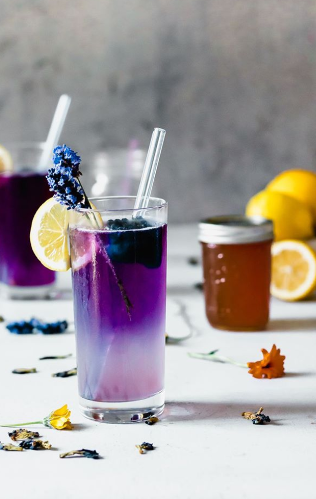
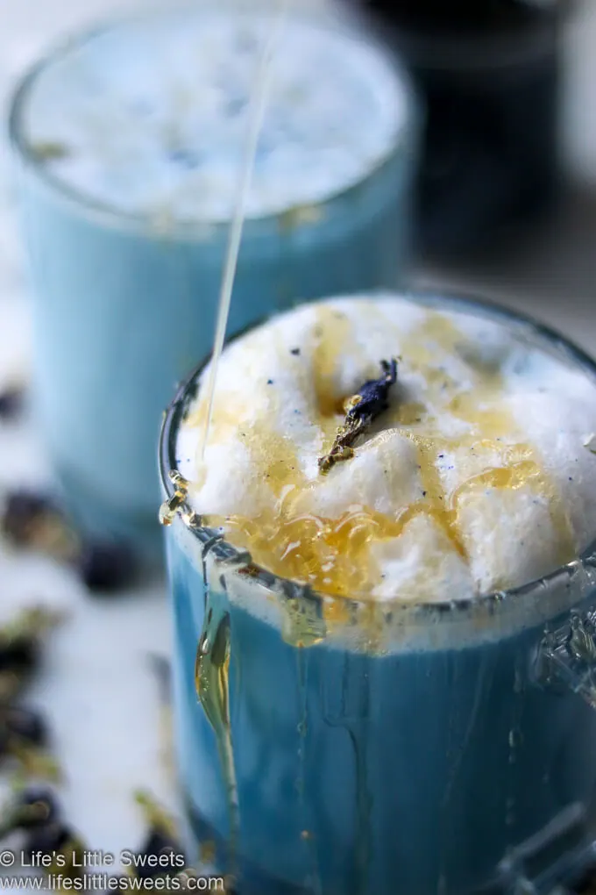
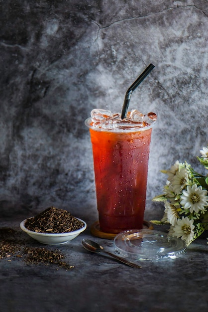

Green Tea Cooler

Chock full of vitamins and minerals,this elixir combines the healfthful benefits of green tea with a twist of chamomile blossoms and ginger root.
Raspberry Ice COncentration
Combining raspberry juice with lemon grass, citrus peel and rosehips, this icy drink will make your mind fell clear and crisp.
Blueberry Bliss Elixir
Blueberries and cherry essence mixed into a base of elderflower herb tea will put you in relaxed state of bliss in no time.
Cranberry Antioxidant Blast
Wake up to the flavors of cranberry and hibisus in this vitamin C rich elixir.